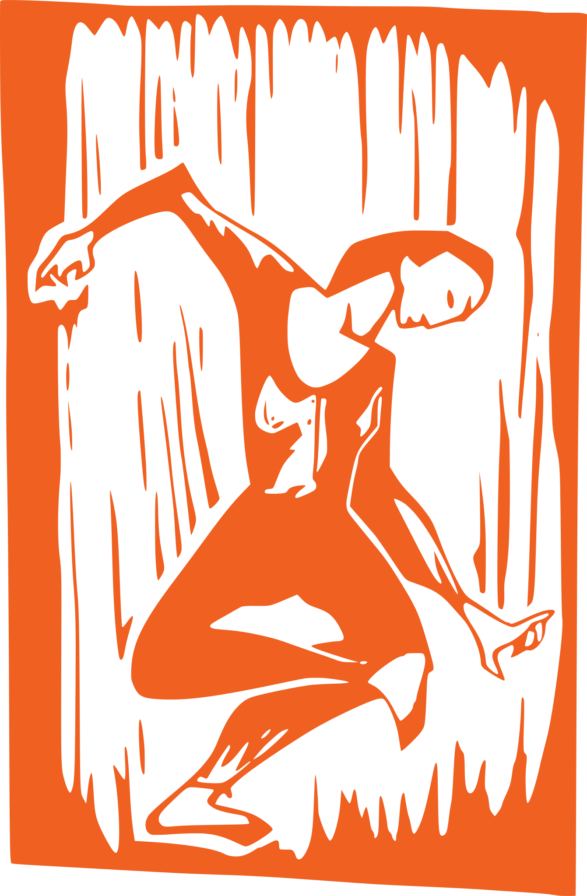

FEMINNĚJŠÍ HAGADA
Lektorka #1:
Annika Tetzner, rodačka z Prahy, vzpomíná na své dětství v terezínském ghettu:
»Večer se nemůžu dočkat, až se maminka a všichni ostatní sejdou u stolu. Jsou po těžké práci tak unaveni, že mi nedovolí mluvit, alespoň dokud mě všichni nepolíbí a neobejmou na uvítanou. Chvíli stojím bez hnutí, než teta Kamila rozhodne:
M „Už jí to musíme říct.“
#1 Všechny se na sebe dívají, trochu v rozpacích. Teta Kamila začne vyprávět:
M „Před mnoha a mnoha lety jsme byli otroci a žili jsme v zemi zvané Egypt.“
#1 „Tak jako dnes?“ ptám se. Ostatní přikyvují.
M „Byl tam krutý vládce, který nenáviděl Židy…“
#1 „To byl Hitler!“
M „Ne, byl to faraon a choval se k Židům tak špatně, že jediné, co si všichni přáli, bylo odejít a jít do vlastní země…“
#1 Maminka mě objímá a mně je najednou u ní na klíně tak teplounko, že usínám. Hlas tedy Kamily přichází jakoby z dálky.
M „A proto slavíme svátek Pesach. Ale nacistům se to nelíbí, a tak ho musíme slavit docela tajně.“«
Matka zapaluje svíce.
Požehnaný jsi, Hospodine, Bože celého světa,
za to, že nás posvěcuješ svými příkazy
a dal jsi nám příkaz zapálit světla dnešního svátku.
Pojďme této noci
Posvěcovat a Očistit se
Namáčet, Dělit a Vyprávět
Očistit se a Požehnat Chléb chudých
Hořké byliny Skládat a Pojídat večeři
Dojídat se a Žehnat
Chválit a Radovat se
🍷Nalije se první pohár vína a pozdvihne:
Požehnaný jsi, Hospodine, Bože celého světa,
z tvé štědrosti přijímáme plody vinné révy.
Požehnaný jsi, Hospodine, Bože celého světa,
vyvolil jsi nás ze všech národů a posvětil svými příkazy.
Z lásky jsi nám, Hospodine, Bože náš,
daroval různá výročí pro radost a svátky k veselí.
Dal jsi nám i tento svátek nekvašených chlebů
– svátek naší svobody, a svatou večeři k připomínce východu z Egypta.
Ze všech národů jsi nás vyvolil a posvětil
a svůj svátek jsi nám odkázal, abychom se radovali a veselili.
Požehnaný jsi, Hospodine, který posvěcuješ Izrael a každou dobu.
První pohár vína se vypije.
Účastník #3:
Už na počátku našeho příběhu známe jeho konec. Izrael opustí Egypt a bude putovat čtyřicet let pouští než vstoupí do Zaslíbené země. Kamkoli Izraelci vstoupí bude je podle vyprávění provázet i studna vody. Tuto zázračnou studnu prý zajistila Miriam, Mojžíšova sestra. To ona dohlížela na svého bratra, když byl jako dítě vložen do košíku z papyru. To ona se k němu později připojila, aby provedli izraelský národ vodami Rákosového moře. Dnešní večer nám zázračnou studnu živé vody bude připomínat pohár prorokyně Miriam.
Bez složitého povídání si účastníci umyjí ruce.
Hlava rodiny vezme kousek kořenové zeleniny a ponoří jej do misky se slanou vodou:
Požehnaný jsi, Hospodine, Bože celého světa,
z tvé štědrosti přijímáme plody země.
Sám zeleninu ochutná a nabídne ostatním.
Hlava rodiny pozvedne mísu s macesy:
Toto je chléb chudých, který jedli naši předkové v egyptské zemi.
Každý, kdo je hladový, ať přijde a pojí.
Každý, kdo je v nouzi, ať přijde a slaví Pesach:
Tento rok zde – příští rok v zemi Izraele!
Tento rok jako otroci, rok příští jako svobodní lidé!
🍷Nalije se druhý pohár vína.
Nejmladší účastník se zeptá:
V čem je dnešní noc jiná než ty ostatní:
Proč právě této noci jíme nekvašené chleby?
Proč právě této noci jíme pouze hořké byliny?
Proč právě této noci používáme slanou vodu?
Proč právě této noci s večeří nespěcháme?
Účastník #3:
Protože když Izraelité utíkali z Egypta, spěchali. Těsto nestačilo vykynout, tak si narychlo připravili nekvašené chleby, macesy. Hořké byliny nám připomínají utrpení otroků v egyptské zemi. Namáčení kořenové zeleniny do slané vody oživuje slzy otroků, a namáčení hořkých bylin do sladkého charosetu nás utvrzuje v příslibu něčeho mnohem sladšího než jsou naše krušné časy. Nespěcháme protože nejsme otroky a můžeme si dopřát odpočinek.
Hlava rodiny:
Buď
požehnán, kdo přebývá na každém místě světa!
Buď
požehnán!
Buď požehnán, kdo daroval Tóru svému lidu
Izraeli!
Buď požehnán!
Tradice hovoří o čtyřech dcerách, které se obracejí na své rodiče: jedna se snaží poučit z historie, druhá nechce vyčnívat, další neví, že u stolu je připravené místo i pro ni, a čtvrtá se neumí ani zeptat.
#1 Ta, která se chce poučit z historie se ptá svých rodičů: „Proč Tóra nepočítá ženy k 600 000 pěším mužů, kteří odešli z Egypta? A proč Mojžíš na Sinaji promlouval pouze k mužům, aby se připravili na Boží Zjevení?“
M Protože tvá dcera ví, že židovská paměť je základem naší identity, odpověz jí, že historie je tvořena těmi, kdo vyprávějí příběhy. Pokud Tóra nezmiňuje, ani nevypočítává ženy, je to teď na ní, aby zaplnila prázdná místa našich posvátných textů.
#2 Dcera, která nechce vyčnívat, se ptá: „Proč musíš do každého textu vkládat ženská témata? a proč jsou všechny ty ženy pro tebe tak důležité?“
M Ptá se „proč jsou pro tebe“, ne „pro mě“. Protože tak snadno zapomíná na úsilí ostatních matek a sester, vyprávěj jí příběh své vlastní cesty k sederovému stolu a přizvi ji, aby se k tobě připojila a děkovala Bohu za požehnání, že je židovskou ženou.
#1 Dcera, která neví, že u stolu je připravené místo i pro ni, se ptá: „Proč to všechno děláte?“
M Protože si neuvědomuje, že její otázka je součástí sederových zvyků, odpověz jí, že celý dnešní večer vypráví příběhy o svobodném životě, a řekni jí, že její pochybnosti a otázky jsou na místě.
#2 Dceři, která se neumí ani zeptat a neví, co dělat, raději pomoz.
M Odpověz jí: „Tvé otázky, pokud je položíš, tě osvobozují z Egypta. Tak tomu je a tak tomu bylo u všech matek a babiček. Platí to od dob Jokebed, její dcery Miriam a porodních báb, které se dotazovaly na faraonovo rozhodnutí, a platí to i dnes: každá otázka, kterou položíme, nám pomáhá znovu opouštět Egypt a objevovat svobodný život.“
M Když byli Izraelité v babylónském vyhnanství, snili o tom, že je Hospodin jednou přivede domů. Neztráceli naději. Vyprávěli si příběhy o svých předcích, jak byli otroky v dalekém Egyptě, a jak také oni toužili po svobodě a domově. Jeden z takových příběhů vypráví v daleké Babylónii i strýček Ben malé Judit:
#3 „Musíte se nachystat k odchodu,“ řekl Mojžíš svému lidu. „O půlnoci, tak praví Pán, zemřou všichni egyptští prvorození synové, ve všech vrstvách, od prvorozeného faraonova syna po nejstaršího syna mlynářovy ženy i zloděje ve vězení. Přes Egypt projde anděl smrti. Ani prvorozená dobytčí mláďata tuto noc nepřežijí.“
#1 „To není moc pěkný příběh. Proč musí nevinní lidé, nevinné děti a nevinná zvířata trpět kvůli králi, který nemá kouska svědomí?“
#3 „Tak je to vždy. a proto je to tak i v tomto příběhu: tyran, který klesá ke dnu, s sebou ve svém pádu strhne i svůj lid. Tyranie, která druhému nepřeje budoucnost, si nezaslouží budoucnost pro sebe a dříve či později padne.“
#1 „Myslím na babylónské trhovkyně, které jsou ke mně tak milé. Nechtěla bych, aby se jejich dětem něco zlého stalo, až se budeme vracet do Zaslíbené země.“
#3 „Nic se jim nestane. Avšak v tomto příběhu se to stalo, protože se to z Božího pohledu muselo stát: dobro přemůže zlo a světlo vytlačí tmu.“
#2 „Dnes se to stane, Árone,“ řekl Mojžíš.
Každé veřeje a příčný trám nad nimi byly potřeny beránčí
krví, aby anděl smrti ten dům vynechal. „Vynechat“, „přejít“:
to se v hebrejštině řekne Pesach. Nastala noc. Nikdo
nešel spát, všichni byli nachystaní, řemen kolem pasu, na nohou
boty, v ruce hůl. Tu noc táhl celou zemí anděl smrti. Zemí se
nesl zoufalý nářek, v každém egyptském domě oplakávali
mrtvého. Domy Izraelců anděl smrti vynechal.
2. Až první krůček bude jednou za námi,
tak nikdo nesmí zaváhat, dát na fámy.
Mává, mává nám všem svobodná zem.
Pak tenhle vandr všem potomkům ukáže.
že šanci má jen ten, kdo má dost kuráže.
Mává, mává nám všem svobodná zem.
3. Ten starý příběh z Bible vám tu vykládám,
ať každý ví, že rozhodnout se musí sám.
Mává, mává nám všem svobodná zem.
#3 Dveře chatrčí, domů a stájí se otevřely a v jasném měsíčním světle jeden po druhém
vyšli ven, muži, ženy, dětí, zvířata. Vynořilo se té noci i mnoho přimíšeného lidu, tuláků a cizinců, zbloudilců, kteří
na tom byli stejně bídně a kteří se přišli skrýt pod křídla
Hospodina Izraele. Byl to pestrý průvod.
Volní, konečně byli volní!
#2 „Neměl jsem je nechat odejít,“ řekl si farao zatvrzele a vypravil se – jako by se nic nestalo – se svou armádou za izraelským lidem, aby jej přivedl zpět.
M Izraelci u Rákosového moře spatřili, jak se zdálky blíží oblak prachu. Věděli, že to jsou faraonovi koně a válečné vozy, jezdci a vojáci, ozbrojení oštěpy a meči. Sami neměli nic, jen řemen kolem pasu a hůl v ruce. Byli v pasti! Za nimi nepřítel, před nimi voda, nemohli nikam uhnout. „Neměli jsme v Egyptě dost hrobů, Mojžíši, abychom museli zemřít tady v poušti? Však jsme tě varovali: raději otrokem v Egyptě než zahynout v poušti!“
#2 Byli otroky, věznění v Egyptě. Na chvilku si mysleli, že jsou svobodní, ale nyní jsou znovu uvěznění. Nemohou zpátky a nemohou vpřed. Pro Boha živého!
#1 „Mojžíši, řekni Izraelcům, aby se vydali vpřed.“
#3 Vydat se vpřed? To si Bůh může říkat, jak chce, ale tam je moře! Vydat se vpřed může člověk, jen když důvěřuje, že se objeví cesta tam, kde cesta není, a že i se smrtí před očima musíš odvážně pokračovat.
#1 „Mojžíši, jdi napřed! Pozdvihni hůl a vztáhni ruku nad moře.“
#3 Mojžíš pozvedl hůl, vztáhl ruku nad moře, a hle: silný východní vítr – Boží dech – odvanul vodu západním směrem. Náhle tu byla cesta, zničeho nic, po suchu! Bylo to skoro jako by voda, které se tak báli, vzala nohy na ramena. Mohli pohodlně přejít na druhou stranu!
#2 A když tam v pořádku
dorazili a farao byl ještě na půli cesty mořem i se zbraněmi a koňmi, jezdci a vojáky, vítr se pojednou utišil, voda se vlila
zpět a celá egyptská armáda se utopila ve vlnách. Nic z ní
nezůstalo.
Mojžíš a Izraelci zpívali píseň svobody. A Mirjam, Mojžíšova
sestra, bubnovala na tamburínu a ženy s ní tančily v reji:
Všichni účastníci zvolají:
Chvalte Pána, neboť je vznešený,
koně i jezdce smetl do moře.
🍷Hlava rodiny pozvedne pohár vína:
A to je ujištění, které se osvědčilo jak našim otcům, tak nám.
Protože nejenom Egypt povstal proti nám, aby nás zničil,
ale v každém pokolení povstávají nepřátelé proti nám, aby nás zničili.
A Svatý Bůh, buď požehnán,
nás stále vysvobozuje z jejich rukou.
Účastníci upijí vína a položí pohár (1/3).
Hlava rodiny:
Je tolik stupňů prokázaného dobra za které musíme být Bohu vděčni!
Kdyby nás z Egypta vyvedl
a nepostavil by je před soud, nám by to bylo stačilo.
Kdyby je před soud postavil,
vynechal však jejich bohy, nám by to bylo stačilo.
Kdyby jejich bohy soudil,
prvorozené však nezabíjel, nám by to bylo stačilo.
Kdyby jejich prvorozené zabil,
nám však nedal jejich jmění, nám by to bylo stačilo.
Kdyby nám dal jejich jmění,
a neroztrhl před námi moře, nám by to bylo stačilo.
Kdyby před námi moře roztrhl,
a neprovedl nás jím po souši, nám by to bylo stačilo.
Kdyby nám jím po souši provedl,
a nepřátele v něm neutopil, nám by to bylo stačilo.
Kdyby v něm nepřátele utopil,
a v poušti se o nás nestaral, nám by to bylo stačilo.
Kdyby se o nás v poušti staral,
ale nekrmil nás manou z nebe, nám by to bylo stačilo.
Kdyby nás krmíval manou z nebe,
ale šabat by nám nedaroval, nám by to bylo stačilo.
Kdyby nám však šabat daroval,
a nepřivedl nás k hoře Sinaj, nám by to bylo stačilo.
Kdyby nás k hoře Sinaj přivedl,
a nedal nám však moudrost Tóry, nám by to bylo stačilo.
Kdyby nám moudrost Tóry dal,
ale nedovedl nás do Svaté země, nám by to bylo stačilo.
Kdyby nás do Svaté země dovedl
a svůj Příbytek by tam nezvolil, nám by to bylo stačilo.
M Z neuveřejněných pamětí prorokyně Miriam.
Jsem Miriam, žiji v Izraeli a nejsem matka. Možná svým způsobem,
v přeneseném smyslu matkou přece jen jsem. Byla jsem vůdkyní
Izraele, jednou z oné trojice, která vyvedla lid z otroctví.
Dneska jsem odstavená politička, odsunutá a umlčená muži,
přesněji řečeno svými vlastními bratry. Teď píši vlastní
paměti a přitom je mi jasné, že za mého života se nedostanou na
světlo. v oficiálních kronikách doby bude o mně jen to, co
dnešní mocní nebudou moci úplně zamlčet, protože ve vědomí
národa je to přítomno příliš silně. Vím také, že moje jméno
a část mého příběhu dále žijí v ženách mého lidu. Jméno
Miriam, to jest „Tvrdohlavá“, dávají mnohé ženy svým
dcerám. A dvě z těchto dcer budou jednou v mém příběhu
pokračovat – za více než tisíc let. To jméno už bude znít
řecky: Maria. Jedna, matka Mesiáše, bude prorokyní už před jeho
narozením; druhá se stane novou náboženskou vůdkyní, průvodkyní
a později hlasatelkou tohoto Mesiáše. Ale také obraz těchto dvou
Marií bude přizpůsobován, deformován a částečně vymazáván.
#1 Vím to, protože prorokyní jsem zůstala, přestože už nesmím dělat nic jiného než psát knihy, které nikdo nečte. Mé jméno možná znají: jsem starší sestra Mojžíše a Árona, vůdců Izraele, kteří si pak moc rozdělili mezi sebou. Snad si ještě vzpomenete na ten krásný příběh o rákosovém košíku a možná i na jistou píseň.
#3 Za to, že se narodili a že tehdy zůstali na živu, vděčí tito muži ženám, které o ně pečovaly: svým matkám, statečným poradním bábám (jmenovaly se Šifra a Púa) a svým sestrám.
M Přežil nejen Mojžíš – jak by mohl později vést celý národ s mnoha válečníky, kdyby byl zůstal jediný ze své generace? Na rozdíl od zemědělských dělníků a cihlářů dostal ovšem mimořádnou příležitost. Ukryla jsem ho brzy po jeho narození v košíku upleteném z trávy do rákosí u Nilu, na místě, o němž jsem věděla, že se tam často prochází faraonova dcera. Sama jsem zůstala nablízku a zařídila jsem to tak, aby si plovoucí kolébky všimla. Princezna poručila služce, aby košík vytáhla na břeh, a rovnou prohlásila, že to je určitě jedno z těch izraelských dětí.
#1 Ale tahle Egypťanka věděla právě tak jako my, izraelské ženy, že děti se nesmějí zabíjet. o malého Mojžíše se chtěla sama starat. Především potřebovala kojnou, aby dítě nemělo hlad. Řekla jsem, že náhodou o jedné vím, a navrhla jsem svoji matku. Princezna pochopila a pobaveně souhlasila. Jeho pozdější výchovu si vzala osobně na starost – moji ostatně také.
#2 Mojžíš měl zjevení. Z hořícího keře k němu promluvil Hospodin a řekl, že máme požadovat, abychom směli s veškerým svým majetkem odtáhnout na východ. Mojžíš se bál přednést tento požadavek egyptské vládě, měl strach, že není dost výřečný. Zato jeho bratr Áron, pozdější kněz, uměl mluvit mnohem líp. (To umějí kněží vždycky moc dobře — nebo si to aspoň o sobě myslí!) Tak jsme tam šli všichni tři a žádali jsme, aby bylo všemu lidu dovoleno odejít.
#3 Teprve, když mocným začalo jít o život, když během jediné noci zemřeli všichni jejich prvorození synové (naše vlastní domy jsme na veřejích označili krví, aby bylo poznat, že jsou izraelské), teprve pak jsme směli odejít. Pro jistotu jsme vyrazili ještě téže noci, protože jsme si uměli vypočítat, že nás brzy začnou pronásledovat: hospodářský růst je přece důležitější než lidské životy.
M Pobízeli jsme ke spěchu, za sebou už jsme slyšeli válečné vazy egyptské armády a pokřik vojáků. Ale dokázali jsme to. a nad Egypťany se zavřela voda. „Hospodin nám pomohl,“ zpívala jsem, „koně a jezdce smetl do moře!“ Moje první velká děkovné píseň. Předzpěvovala jsem ji a bubnovala na bubínek a brzy ji se mnou zpívali všichni — přinejmenším refrén. Ta píseň a hudební nástroje nám ještě mnohokrát pomohly. Dokázaly lidi trochu povzbudit, když už je bolely nohy a všichni měli hlad a žízeň.
#1 Na Sinaji vystoupil Mojžíš na horu, aby si s Hospodinem a sám se sebou v klidu vyjasnil, co s tím zmateným a reptajícím národem. Hospodin nechtěl být nějaký bůh na obraze, ale dal nám svoje slova – na kamenných deskách, které by nám je připomínaly, a později Knihu knih. Brzy, ještě na poušti, z toho vznikl celý zákoník. Mojžíš ho zapsal, zákony byly sděleny pouze jemu.
M Někdy se ptám, jestli byly skutečně zaměřeny proti ženám,jestli byly skutečně myšleny tak, jak tu jsou dodnes — kdyby byly zákony zjeveny mně, kdybych je byla zapsala já, asi by vypadaly jinak. Ale svoji výsadu mluvit s Hospodinem jako jediný Mojžíš žárlivě bránil. Když jsem spolu s Áronem toto právo zpochybňovala, když jsme Mojžíše kritizovali, přišel Hospodin v oblakovém sloupu a spočítal nám to. Áronovi neudělal nic – že by pro kněze platila nějaká imunita? – jenom na mě za mou vzpurnost seslal malomocenství. Sice jsem se za sedm dní uzdravila, protože Mojžíš o to prosil, a směla jsem se vrátit do tábora, kam jsem celou tu dobu neměla přístup (myslím si, že lidé by beze mne ani dál nešli — někteří to také naplno říkali!), ale pozici vůdkyně jsem tím ztratila. Odteď jsem prostě táhla mezi ostatními.
#2 Bylo to pro mě poučení: Ženy nemají kritizovat, nemají se míchat do politiky a náboženství — to je teď výhradně mužská věc. Můj případ se stal varováním pro ostatní ženy. Od té doby mám proti Hospodinu jisté výhrady. Bůh, jakého potřebujeme, by neměl být pouze vítězný a žárlivý. Jako prorokyně vím, že i tento Bůh se změní. Později se o něm bude psát něco jiného než jen to, co je v Zákoně. Jenomže dokud budou Boha a jeho slova vykládat muži, budou tyhle vlastnosti na Bohu to hlavní, protože tak mohou muži ovládat nás ženy.
#3 Já jsem prorokyně, ale budeme potřebovat i kněžky a učitelky, které budou vykládat Boha, aby nebylo možno odstrkovat političky a odvolávat se přitom na údajné Boží výroky. Aby se s jinými ženami nezacházelo jako se mnou. Stejně jako Mojžíš a Áron ani já nedojdu do Zaslíbené země. Pochovají mě v Kadeši. A nevyhlásí oficiálně třicet dní smutku jako když umřel Áron, můj bratr. Ale k mému hrobu budou ještě mnozí putovat a budou mně tam oplakávat.
Hlava rodiny:
V každé době a v každém pokolení je povinností každého Žida vidět sám sebe, jako by on sám vycházel z Egypta, jak je psáno:
Lektor Písma:
„V onen den svému potomku oznámíš: Protože tohle mi prokázal Hospodin, když jsem vycházel z Egypta.“
Hlava rodiny:
Svatý Bůh, buď požehnán, nevykoupil pouze naše předky, ale s nimi vykoupil také nás:
Lektor Písma:
„I nás odtamtud Hospodin vyvedl, aby nás uvedl sem a dal nám zemi, jak přísahal našim otcům.“
🍷Hlava rodiny pozvedne pohár s vínem:
Proto je naší povinností děkovat Hospodinu a opěvovat, oslavovat, vychvalovat, vynášet, slavit, žehnat, vyzdvihnout a chválit Toho, kdo udělal pro naše předky a pro nás všechny tyto zázraky. Vyvedl nás z otroctví ke svobodě, ze zármutku k veselí, ze dnů postních ke dni svátečnímu, z nejhlubší temnoty k velikému světlu a ze zotročení k vysvobození. Dopřál nám těšit se ze svobody v naší zemi a svěřil nám úkol o tuto svobodu pečovat, rozvíjet ji, chránit a obhajovat.
Předstupme před Hospodina s novou písní a opěvujme našeho Boha.
Účastníci upijí vína a položí pohár (2/3).
Zazpívá se Žalm 113.
vzývejte všichni Hospodina
jeho jméno chvalte
od nyní navěky
ať je známé po celé zemi
od východu slunce až po jeho západ
sláva Hospodinova
je nade všemi národy
vznáší se nad nebesa
prostupuje vesmír
jeho trůn je vysoko
a přece se Hospodin sklání
k obyčejným lidem
chudáka pozvedá z prachu
neplodné činí úrodným
těm, kdo jsou na dně
dává úspěch
🍷Hlava rodiny pozvedne pohár s vínem:
Požehnaný jsi, Hospodine, Bože celého světa, za to, že jsi nás vysvobodil, že jsi vysvobodil naše předky z Egypta, a nám daroval tuto sváteční noc, abychom v ní jedli nekvašené chleby a hořké byliny. Podobně nám, Hospodine, Bože náš a Bože naší rodiny, daruj jiné sváteční dny a svátky. Daruj nám pokoj a mír, radost a potěšení z této rodinné bohoslužby.
Požehnaný jsi, Hospodine, Bože celého světa, z tvé štědrosti přijímáme plody vinné révy.
Vypije se druhý pohár vína (3/3).
Následuje rituální mytí rukou během kterého se říká požehnání:
Požehnaný jsi, Hospodine, Bože celého světa, za to, že nás posvěcuješ svými příkazy a dal jsi nám příkaz o umývání rukou.
Hlava rodiny pozvedne mísu s macesy:
Požehnaný jsi, Hospodine, Bože celého světa, z tvé štědrosti přijímáme chléb země.
Požehnaný jsi, Hospodine, Bože celého světa, za to, že nás posvěcuješ svými příkazy a dal jsi nám příkaz pojídání nekvašeného chleba.
Hlava rodiny pojí kousek chleba a nabídne ostatním.
Hlava rodiny ukáže na hořké byliny.
Požehnaný jsi, Hospodine, Bože celého světa, za to, že nás posvěcuješ svými příkazy a dal jsi nám příkaz pojídání hořkých bylin.
Ochutná hořké byliny, které krátce ponořil do charosetu a otřásl. Nabídne ostatním.
Hlava rodiny pronese:
V období před zbořením jeruzalémského Chrámu tehdejší rabín Hilel dělával toto – skládal dohromady nekvašené chleby a hořké byliny namočené ve sladkém charosetu a pojídal je zároveň.
Pojí maces a hořké byliny s charosetem jako sendvič a ostatní ho následují.
Proč maces, hořké byliny a sladký charoset?
Právě s Izraelem vycházíme s Egypta. Maces je tvrdý, suchý, bez chuti. Jako náš předchozí život.
Opouštíme otroctví, kterým nám zhořkl život. Lepivý charoset je znamením vzájemnosti a naděje, která nám pomáhá obstát v budoucnosti.
Naše všední dny přeci taky občas připomínají hořko-sladké komedie.
Nejdříve se pojí vejce namočené do slané vody. Pak teprve přichází hlavní chod.
🍷Vína se pije dle libosti.
Posledním soustem večera je opět kousek macesu.
🍷Nalije se třetí pohár vína. Všichni se postaví. (H – Hlava rodiny; O – Ostatní)
H Poděkujme za dnešní večer.
O Ať je Hospodinovo jméno požehnáno nyní i navěky.
H Ať je Hospodinovo jméno požehnáno nyní i navěky.
H Přátelé, svobodní lidé, dámy a pánové, když dovolíte, poděkujme Bohu na jehož štědrosti jsme měli podíl a díky jeho dobrotě žijeme.
O Požehnaný je Hospodin na jehož štědrosti jsme měli podíl a díky jeho dobrotě žijeme.
H Požehnaný je Hospodin na jehož štědrosti jsme měli podíl a díky jeho dobrotě žijeme.
O Je požehnaný a požehnané je jeho jméno.
Všichni se posadí.
Účastník #1:
Děkujeme ti, Hospodine, Bože náš, že jsi dal našim rodinám do dědictví krásnou, dobrou a prostornou zemi. Žehnáme ti, že jsi nás, Hospodine, Bože náš, vyvedl z egyptské země, vyhnanství otroků. Děkujeme ti za tvou smlouvu, kterou jsi vpečetil do našeho života; za slova Písma, kterým nás učíš; za své předpisy, které jsi nám dal poznat. Děkujeme ti za život, milost a lásku, kterou jsi nás obdaroval; a za jídlo, protože Ty nás živíš a vždycky se o nás staráš v každé době, každého dne a každou hodinu.
🍷Účastníci upijí vína (1/3).
Hlava rodiny:
Za to všechno, Hospodine, Bože náš, ti děkujeme a žehnáme, vždyť je psáno: „Když se dosyta najíte, nezapomeňte za tuto zemi poděkovat Hospodinu, svému Bohu, který vám ji věnoval. Dávejte si dobrý pozor, abyste na Hospodina nezapomněli a nepřestali respektovat jeho přikázání, výnosy a zákony, které vám dnes dává.“
Účastník #2:
Požehnaný jsi, Hospodine, Bože náš, Králi světa, náš Otče, náš Králi,
náš Mocný, náš Stvořiteli, náš Vykupiteli, náš Tvůrce, náš
Svatý, svatý Jakubův, náš Pastýři, pastýři Izraele, ty Dobrý
králi, který všem dopřáváš dobro.
Požehnaný jsi za to, že jsi k nám byl dobrotivý, že jsi k nám dobrotivý i teď a že k nám budeš dobrotivý!
🍷Účastníci upijí vína (2/3).
Účastník #1:
On, Milosrdný, nám bude vládnout na věky a věčně!
On, Milosrdný, buď požehnán na nebi a na zemi!
On, Milosrdný, budiž veleben po všechna pokolení
a kéž jsme navždy jeho největší chloubou a slávou na věky věků.
Kéž nám, Milosrdný, poskytuje důstojnou obživu,
kéž zlomí okovy, které nás nutí k otrockým činnostem,
a kéž nás vzpřímené přivede do naší země!
On, Milosrdný, ať nám do našeho domu a na tento stůl,
sešle mnohonásobné požehnání!
Kéž nám, Milosrdný, pošle proroka Eliáše
– i jeho je třeba dnes připomenout –
a ten ať zvěstuje evangelium záchrany a útěchy.
Kéž, Milosrdný, požehná každému otci a matce;
jim a jejich domácnosti a jejich dětem a všemu, co jim patří;
nám a všemu, co nám patří.
Ostatní:
Amen.
🍷Hlava rodiny pozvedne pohár vína:
Požehnaný jsi, Hospodine, Bože celého světa,
z tvé štědrosti přijímáme plody vinné révy.
Všichni vypijí obsah třetího poháru (3/3).
Eliášův pohár je naplnění vínem, Mirianin pohár vodou.
Požehnaný jsi, Hospodine, Bože celého světa,
z tvé štědrosti přijímáme dar životodárné vody.
Tak jako děti Izraele, když opustili Egypt, chraň i nás,
vychovávej nás a rozvíjej náš život v poušti tohoto světa.
A otevři naše oči, ať už samotná cesta
je pro nás příslibem naše vykoupení.
Amen.
Někdo otevře dveře. 🚪
Lektor Písma:
„Pohleďte,
pošlu k vám svého proroka Eliáše,
dříve než přijde významný, úžas budící Hospodinův den.
Díky němu se rodiče sblíží se svými dětmi.
Obrátí srdce otců k synům a srdce synů k otcům.
[Matky přilnou ke svým dcerám a dcery k matkám.]“
2. Miriam HaNeviá oz v’zimra b’jadá
Miriam tirkod itanu l’hagdil zimrat olam
Miriam tirkod itanu l’taken et ha-olam
Bimherah v’yameynu hi tevi-eynu
el mey ha-ješua, el mey ha-ješua.
Prorok Eliáš, Eliáš Tišbejský, Eliáš Gileádský,
ať přijde k nám již brzy, za našich dnů,
a přivede Mesiáše, syna Davidova.
Prorokyně Miriam, síla a píseň v její rukách.
(Miriam, tancuj s námi, ať se rozšíří tato píseň světa!)
Miriam, tancuj s námi, ať se obnoví svět.
Brzy nás přiveď k vodám vykoupení!
🚪 Dveře se zavřou.
Zpívá se Žalm 115.
Hospodine
všechna sláva ať patří tobě
nikoliv nám
jsi neviditelný, a přece věrný.
je naivní, kdo říká:
kde je ten váš Bůh?
náš Bůh je na nebesích
odkud koná divy
jejich modly jsou jen
kusy stříbra a zlata
mají oči, uši, ústa
roce a nohy
ale jsou mrtvé
jako je mrtvá naděje těch
kdo v ně věří
Izrael doufá v Hospodina
on je naším ochráncem
on žehná ty, kdo ho chválí
ať jsou velcí nebo malí
Hospodin stvořil nebesa i zem
nebe si ponechal, zem dal člověku
mrtví jsou v říši ticha
ale my budeme chválit Hospodina
on nyní navždy
haleluja
Halel se uzavře Žalmem 136 s odpovědí všech zúčastněných.
chvalte Hospodina za všechno dobro Odp.: jeho láska je věčná
chvalte Boha všech bohů
chvalte Pána pánů
chvalte toho, kdo koná zázraky
chvalte stvořitele nebe i země
chvalte stvořitele vesmíru
chvalte stvořitele slunce i měsíce
on dal slunci vládu ve dne
a měsíci vládu v noci
on dal otrokům svobodu
vyvedl Izrael z Egypta
rozdělil před ním Rudé moře
aby tudy jeho lid prošel
faraona s mocným vojskem zničil
svůj lid vodil pouští
všechny nepřátele přemohl
jejich zem dal Izraeli
nezapomněl na ponížené
vytrhl je z rukou škůdce
Hospodin je pánem života
chvalte nebeského Boha
Hlava rodiny pokračuje:
Věčně chváleno buď Tvé jméno, Králi náš, Bože, veliký a svatý králi v nebesích a na zemi.
Tobě patří, Hospodine, Bože náš a Bože našich rodin, báseň a chvála, opěvování a píseň, moc a vláda, vítězství a velikost, síla, oslava, krása, svatost a království, požehnání a díky, nyní až navěky.
Tobě žehnáme, Bože, králi, veliký chvályhodnými činy, Bože díkůvzdání, Pane divů, Bože, živý v každém věku.
🍷Nalije se čtvrtý pohár vína. Hlava rodiny pozvedne pohár vína:
Požehnaný jsi, Hospodine, Bože celého světa,
z tvé štědrosti přijímáme plody vinné révy.
Účastníci upijí vína (1/3).
Požehnaný jsi, Hospodine, Bože náš, za vinnou
révu a za plody vinné révy, za výtěžek polí a za pěknou,
dobrou a prostornou zemi. Daroval jsi ji z lásky našim předkům,
abychom jedli z jejích plodů a sytili se z jejího dobra. Smiluj
se, Hospodine, Bože náš, nad Izraelem, svým lidem, nad
Jeruzalémem, svým městem, nad Sionem, příbytkem své slávy, nad
svým oltářem a nad svým Chrámem! a zbuduj Jeruzalém, město
svaté, brzy již, za našich dnů!
Žehnáme Ti, Hospodine, za
tuto zemi a za plody vinné révy!
Hlava rodiny:
Dle předpisu jsme dovršili seder pesachový, dle zákonů a ustanovení.
Jak zasloužili jsme si jeho připravení,
tak zaslužme si vbrzku jeho provedení.
Ať Bůh, Průzračný, přebývající na nebesích,
pozvedne zástupy Izraele, v neslýchaném počtu!
Ať shromáždí rozptýlený národ,
a Sion se naplní svobodným lidem v jásotu a písních.
Všichni společně a nahlas:
Nyní zde a na budoucí rok v Jeruzalémě!
🍷Účastníci upijí vína (2/3).
Pro jedno kůzle, jedno kůzle,
co táta koupil za dva zlaté,
pro jedno kůzle, pro jedno kůzle!
A přišla kočka, sežrala kůzle,
co táta koupil za dva zlaté,
pro jedno kůzle, pro jedno kůzle!
A přišel pes, zakousl kočku,
co sežrala kůzle,
co táta koupil za dva zlaté,
pro jedno kůzle, pro jedno kůzle!
A přišla hůl, ubila psa,
co zakousl kočku,
co sežrala kůzle,
co táta koupil za dva zlaté,
pro jedno kůzle, pro jedno kůzle!
A přišel oheň, spálil tu hůl,
co ubila psa,
co zakousl kočku,
co sežrala kůzle,
co táta koupil za dva zlaté,
pro jedno kůzle, pro jedno kůzle!
A přišla voda, zhasila oheň,
co spálil tu hůl,
co ubila psa,
co zakousl kočku,
co sežrala kůzle,
co táta koupil za dva zlaté,
pro jedno kůzle, pro jedno kůzle!
A přišel vůl, vypil tu vodu,
co zhasila oheň,
co spálil tu hůl,
co ubila psa,
co zakousl kočku,
co sežrala kůzle,
co táta koupil za dva zlaté,
pro jedno kůzle, pro jedno kůzle!
A přišel šochet, zařízl vola,
co vypil tu vodu
co zhasila oheň,
co spálil tu hůl,
co ubila psa,
co zakousl kočku,
co sežrala kůzle,
co táta koupil za dva zlaté,
pro jedno kůzle, pro jedno kůzle!
A přišel anděl smrti a usmrtil šocheta,
co zařízl vola,
co vypil tu vodu
co zhasila oheň,
co spálil tu hůl,
co ubila psa,
co zakousl kočku,
co sežrala kůzle,
co táta koupil za dva zlaté,
pro jedno kůzle, pro jedno kůzle!
A přišel Bůh požehnaný a zahubil anděla smrti,
co usmrtil šocheta,
co zařízl vola,
co vypil tu vodu
co zhasila oheň,
co spálil tu hůl,
co ubila psa,
co zakousl kočku,
co sežrala kůzle,
co táta koupil za dva zlaté,
pro jedno kůzle, pro jedno kůzle!
Svoboda do posledního dechu
„Kdybych stál na počátku věků… a Bůh Nejvyšší se mě zeptal: ‚Martine Luther Kingu, ve které době bys chtěl žít?‘, rád bych se nechal přenést do Egypta. Sledoval bych Boží děti v jejich nádherné cestě od temné otročiny…, napříč Rudým mořem, skrze suchopárnou poušť, směrem k Zaslíbené zemi…
To naléhavé volání je vždycky stejné: ‚Chceme být svobodní!‘“
srov. Martin Luther King, kázání I've Been to the Mountaintop, 3. 4. 1968
Použitá literatura
Rozepsaní účastníci: Miriam, Hlava rodiny (každý cca ¼ textu) , #1, #2, #3 (každý cca 1/6 textu), lektor Písma (zanedbatelný rozsah). Celkový rozsah: cca 5 000 slov, orientačně 45 min čtení samotného textu.
Annika Tetzner: Červená stuha. Terezínské ghetto očima dítěte, Praha: Portál, 2011.
Nová pražská pesachová hagada, Praha: Sefer, 2007.
Safran Foer: Haggadah, London: Hamish Hamilton, 2012.
Elissa Strauss: The Kveller Haggadah, Middletown, Delaware: Kveller, 2019.
Rachel Barenblat: The Velveteen Rabbi‘s Haggadah for Pesach.
Nico ter Linden: Země za duhou, Benešov: Eman, 2015.
Josef Imbach: Radost z Bible, Praha: Vyšehrad, 2018.
Daniel Raus: Žalmy. David a jeho blues, Bratislava: Porta libri, 2015.